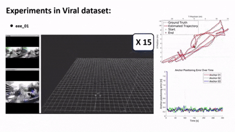

|
Jiawei Xia I’m currently in my final year of undergraduate studies at Beijing University of Chemical Technology (BUCT). I am working hard on research in the field of robotics, including Robot manipulation and Spatial intelligence . Now, I am working as a research intern at Institute of Navigation and Control, Tsinghua University; under the supervision of Dr. Weining Lu and Dr. Yongliang Shi. In the past, I worked as a research intern at George Mason University MICO Lab.During my time at BUCT, I am maintaining GPA Rank 5% and leading the SIE Robotics Club, a student organization focused on home-service robots, and mentored lower-year students. In my spare time, I enjoy Photography, Traveling, Hiking, Formula 1 and Basketball. Email: xiaharroldqq@gmail.com LinkedIn / GitHub / X / bilibili / Google Scholar / Rednote / YouTube |
🔥 News
|
{kind=link}
🧑🎓 Education |

|
Beijing University of Chemical Technology, Beijing, China
Bachelor of Engineering, Mechanical Design, Manufacturing and Its Automation (Robotics) 2022.9-Now GPA: 3.75/4.33 Rank 5% Ex-president of SIE Robotics Club. |
💻 Internship |
|
|
Institute of Navigation and Control, Tsinghua University
Research Intern Advisor: Dr. Yongliang Shi , Dr. Weining Lu 2024.12-Present Served as Project Lead for the development of the Robust Point-line-Thermal-LiDAR-Inertial SLAM system. Participated in research on a multi-modal framework for robotic kitchen manipulation. |
|
|
Multi-agent Intelligence, Control, and Optimization Lab, George Mason University
Remote research assistant Advisor: Dr. Yizhi Zhou 2024.9-2025.2 Participated in the development of a Robust Online Calibration Framework for UWB anchors in VINS to improve anchor positioning accuracy and robot localization. |
📚 Publications* : Equal contribution; †: Corresponding author(s) |
|
|
Robust Online Calibration for UWB-Aided Visual-Inertial Navigation with Bias Correction
Yizhi Zhou, Jie Xu, Jiawei Xia, Zechen Hu, Xuan Wang† International Conference on Intelligent Robots and Systems 2025 (IROS) [Paper] [Video] This paper proposes a robust online calibration method for UWB anchors in Visual-Inertial Navigation Systems. It overcomes issues with existing methods, such as reliance on accurate robot localization and sensitivity to initial anchor positions. Based on MSCKF, our approach uses stochastic optimization for reliable initialization and a Schmidt Kalman Filter for online refinement. |
|

|
CVIRO: A Consistent and Tightly-Coupled Visual-Inertial-Ranging Odometry on Lie Groups
Yizhi Zhou, Ziwei Kang, Jiawei Xia, Xuan Wang† International Conference on Intelligent Robots and Systems 2025 (IROS) [Paper] [Video] This paper proposes a consistent and tightly-coupled visual-inertial-ranging odometry (CVIRO) system based on the Lie group. Our method incorporates the UWB anchor state into the system state, explicitly accounting for UWB calibration uncertainty and enabling the joint and consistent estimation of both robot and anchor states. Further more, observability consistency is ensured by leveraging the invariant error properties of the Lie group. |
🤖 Projects |

|
Train Action Chunking Transformer using Low-Cost Robotic Arms and Dexterous Hands
Jiawei Xia I have recently begun to learn about Robo Learning. I used a Low-Cost robotic arm and Amazing-Hand, and built a MuJoCo environment for them. I adapted the LeRobot code to our robotic arms and collect camera images and joint state data, which I used to train the open-source neural network model, Action Chunking with Transformer (ACT). Additionally, I trained an imitation learning policy for the Franka robotic arm in the Isaac Lab 2.0 simulator. |

|
Robocup@Home: Develop an intelligent home service robot based on ros
Jiawei Xia, Xianglei Dong, Wengcong Zhang, Boyi Zhang, Yutong Sun Developed an intelligent home service robot using Kinova Gen2 and Kinect Azure camera based on ROS Noetic, with functions including guest reception and guidance, voice interaction, object recognition, and room cleaning. Used Gemini, SAM2, and Graspnet algorithm to get the pose of the special object, which was sent to the end of the robotic arm by TF listener. Controlled the arm using Actionlib and MoveIt!. Applied FAST-LIO2 using Livox-MId360 for indoor mapping and robot localization. Combined robot with a finite state machine to enable simple human-computer voice interaction. |

|
RoboMaster University League 1v1 Combat Competition
Yutao Guo*, Hanhong Fu*, Jiawei Xia Used the vision algorithm framework of the South China Normal University - PIONEER team to our own robot, used PnP to calculate the 3D position of the armor plate, and used Kalman filtering for tracking; The robot used four M3508 motors for the chassis and two M6020 motors for the turret, controlled via CAN communication and PID algorithms for current, speed, and position loops. Used feedforward PID to improve the gimbal drive and achieve gravity compensation. |

|
Simulation of an Intelligent Mineral Handling Robot
Xianglei Dong*, Jiawei Xia*, Wencong Zhang, Boyi Zhang ICRA 2024 RoboMaster University Sim2real Challenge: In Habitat sim environment in docker provided by organizers, utilized ArUco for detecting poses of boxes, extracted the transformation and rotation matrices of box from solvePnP. Deployed an Extended Kalman Filter alongside an omnidirectional motion model for state estimation using sensor data, including IMU, odometry and depthimage to laserscan. |

|
Train Unitree G1 to imitate Kongfu bahaviors and deploy policy to real robots based on Kongfubot
Yixiao Feng, Jiawei Xia Based on Open source Kongfubot, used inverse kinematics retargeting and reinforcement learning to enable humanoid robots to imitate highly-dynamic behaviors (e.g., kungfu, dancing). Enhanced performance via motion processing and adaptive tracking. Developed sim2sim in MuJoCo and sim2real with Unitree SDK, successfully deploying the framework on the Unitree G1 robot. |
|
|
Course Design: Use AutoCAD and SolidWorks 2023 to Design the Structural Design of the Single - Leg Hydraulic System for a Multi - Legged Robot and a Two - Stage High - Speed Helical Gear and Low - Speed Spur Gear Cylindrical Reducer
Jiawei Xia First, designed the oil circuit. Selected DSG-01 and DSG-005 directional control valves, as well as a flow control valve, a pilot operated relief valve, etc. for the parts. Second, designed a two-stage high-speed helical gear and low-speed spur gear cylindrical reducer using AutoCAD, with a design life (service life) of 10 years. The transmission device consisted of a motor, V-belt, reducer, and working machine. |
🏆 Honours & Awards |
|
2025 First Prize in the Embodied AI Entrepreneurship Bootcamp organised by Hong Kong Center for Construction Robotics
2025 Third Prize in DJI Technology RoboMaster University League Competition 2025, China, Shandong Province 2024 Xiaomi Scholarship 2024 Second Prize in Robocup@Home Competition (leader) 2024 Second Prize in China iCAN Innovation Contest (leader) 2023 Beijing University of Chemical Technology Excellent Student Leader 2021 First Prize in DJI Technology RoboMaster Youth East China League Competition
|
🏀 Leaderships & Activities |
|
Teaching Assistant of Robotic Workshop at BUCT Leader of the SIE Robotics Club Signed Photographer for 500px and Visual China Leader of the BUCT EYE Photography Club Leader of the Comprehensive Office, BUCT Student Union Member of BUCT SIE Basketball Team |
|
Design and source code from Jon Barron's website. |